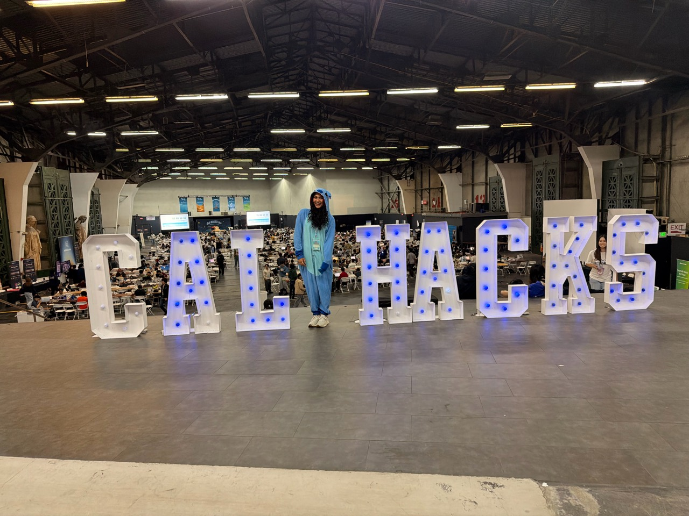

Organized chaos, excellent company
One weekend. A scam investigation tool. One Stitch onesie. A lot of “what are you building?”

At Cal Hacks 13.0 in October 2026, I worked on an AI-assisted scam investigation project. I also made it a personal goal to meet as many hackers as possible and hear what they were excited about.
Saturday included roughly 18,000 steps, a Clash Royale tournament, exploring San Francisco with friends, and plenty of conversations. The step count is my own recollection, not an independently verified metric.
I like the building. I like the people just as much. A hackathon can be both technical work and a very good reason to ask someone about their idea.